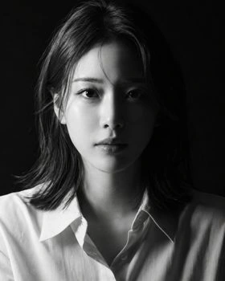
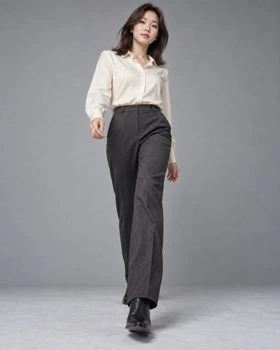
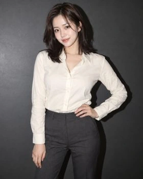
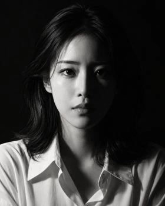
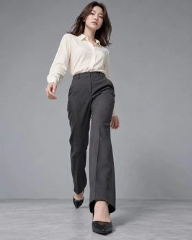
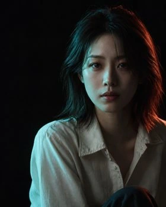
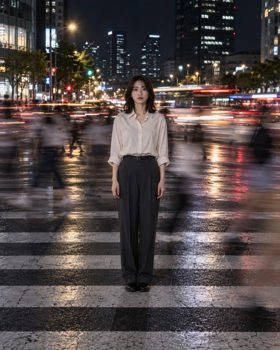
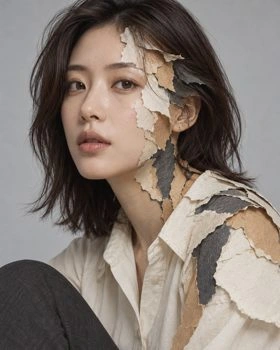
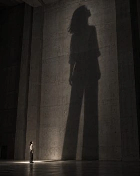

시연 1장 + 1차 30장 + 2차 15장 + 3차 5장 = 원본 51장. 미리보기를 누르면 원본을 엽니다.
# 시각문법 이미지 실험 전체 기록 기록일: 2026-10-18. 프로젝트 내 원본 51장: 시연 1장 + 1차 30장 + 2차 15장 + 3차 5장. 전체 파일 목록·해시는 실험전체_파일명세.json에 기록했다. 비교 HTML·JPG에 포함한 복제 표현은 원본 장수에 더하지 않았다. |회차|질문|실행|결과와 한계| |---|---|---|---| |기본 샷|조합으로 전형적인 사진을 만들 수 있는가?|1장|구현 시연. 대조군 없음| |1차 A/B|상세 지시에서 코퍼스 설명을 추가하면 좋아지는가?|A 10장·B 10장·별도 A 10장|장면이 유사. A 원문에 이미 시각문법이 상세하게 들어감. B의 일관된 우위 입증 못함| |2차 ABC|짧은 의도를 코퍼스와 일반 지식으로 구체화하면 다른가?|5과제×3조건=15장|B/C는 연출을 구체화. 같은 세션·같은 작성자로 독립 무코퍼스 대조군 아님| |3차 조합|다른 영역을 묶으면 낯선 표현을 설계할 수 있는가?|5종×1장=5장|종이 재질·정지/움직임·낮/네온 등 구현. 창작 가능성 시연이며 엑셀 고유 효과는 미검증| ## 자료 위치 - 1차 30장 비교: review_20261018/comparison_30_images.html - 1차 검토: review_20261018/검토보고서.md - 2차 15장 비교: round2_ABC_5cases/ABC_비교자료.html - 2차 프롬프트: round2_ABC_5cases/prompts.json - 2차 검토: round2_ABC_5cases/ABC_비교보고서.md - 3차 결과: round3_실험적조합/실험적조합_결과.html - 3차 프롬프트·메타데이터: round3_실험적조합/prompts.json 및 E01~E05.json - 전체 미리보기: 실험전체_기록.html ## 현재까지 확인한 것 1. 엑셀 항목을 고르고 광원·포즈·구도·재질에 적용한 근거를 추적할 수 있다. 2. 상세한 지시는 코퍼스 없이도 전형적인 사진을 잘 만들었다. 3. 낯선 조합은 제작 가능하지만 이미지의 외형 차이만으로 코퍼스의 고유 기여를 입증하지 못한다. 4. 정교한 요청이 항상 구현되지 않는다. 배우 초상의 삼각광과 그림자 물리 정합성은 해결되지 않았다. ## 확인하지 못한 것 - 실제 이미지 모델·버전·품질·시드 일치. 같은 도구·해상도만으로 모델 동일성을 보장할 수 없다. - 학생의 이해·선택 능력·제작 시간 향상. 교육적 효용은 가설이다. - 같은 조건에서의 반복 재현성·독립 평가자 선호·정량적인 품질 향상. - 독립된 무코퍼스 세션 효과. 2·3차는 같은 대화 맥락의 영향을 배제하지 못한다. ## 판단의 대안 일반 모델 지식만으로 충분할 수 있다. 반대로 시험이 코퍼스의 장점을 드러내지 못했을 수도 있다. 창작자의 문장 설계, 추가 길이, 생성 우연성이 차이를 설명할 수도 있다. 결과를 한 방향으로 확정하지 않는다. 다음에는 한 사례의 단계별 변형과 독립 세션 반복을 수행한다. 교육적 효과는 학생의 예측·설명·수정 과정으로 별도 평가한다. ## 기록 원칙 첫 성공본을 보존했다. 미적 실패를 삭제하거나 재생성해 유리한 사례를 고르지 않았다. 원본 자료는 수정하지 않았다. 엑셀 정의와 작성자의 창작 확장을 구분했다. 이미지는 생성 이미지이며 실제 인물의 촬영 기록이 아니다. 외부 이미지 참조 파일은 전달하지 않았다.








